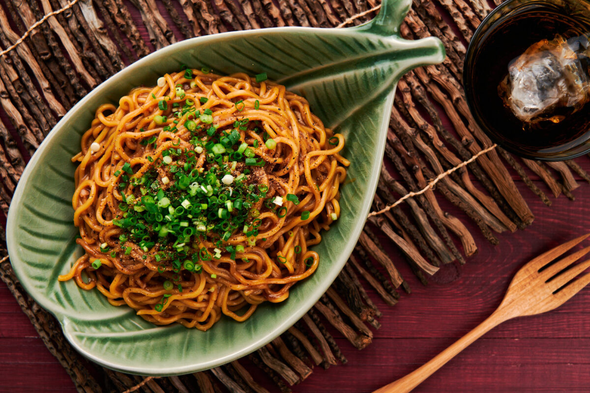

Garlic Noodles

Description
This is one of my favourite dishes to make because it is simple and easy
To be honest, it is one of the easiest dishes to make out there so there is no reason for you to not be able to make one as well!
Ingredients
- Pasta
- Olive oil
- Garlic
- Chopped parsley
- Red chilli flakes
Steps
- Boil pasta to al dente
- Add olive oil onto pan and heat
- Fry garlic until slightly golden brown
- Add in chilli flakes onto the pan
- Add in cooked pasta
- Add in a little bit of pasta water
- Leave to cook for 2 minutes
- Serve with fresh chopped parsley on top and enjoy!